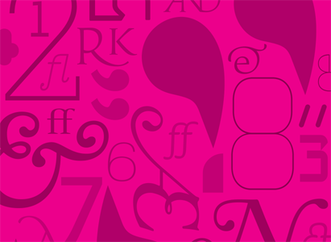
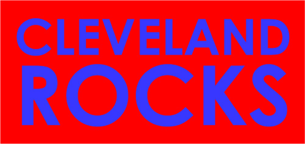
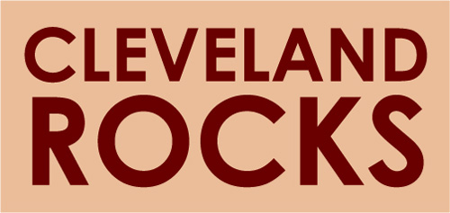
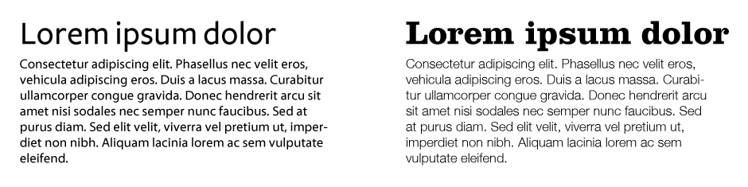
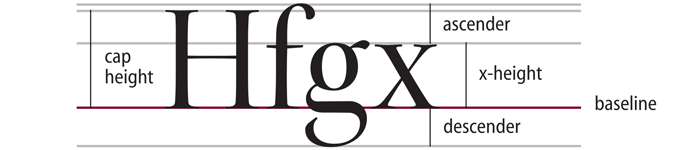
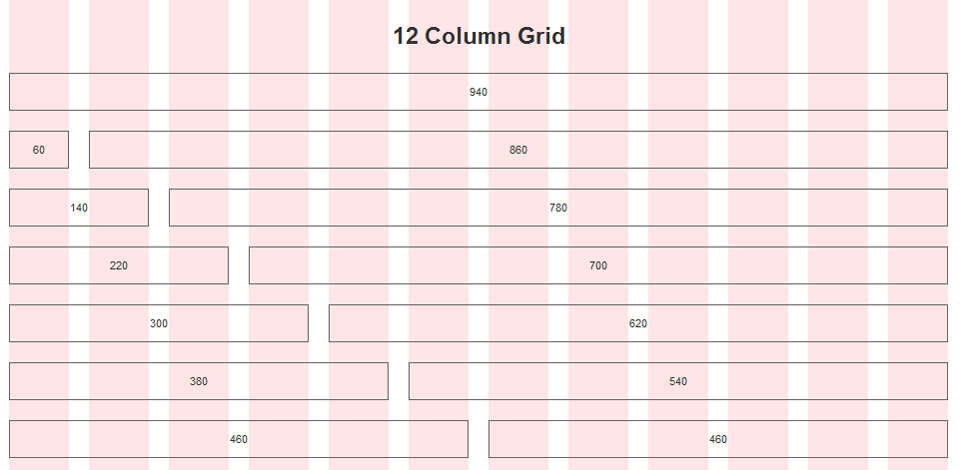

Design for Programmers
A beginner's guide to hacking web design
Design is important
- It makes your hack stand out from the rest
- Your audience will take you more seriously(Especially if you want to get publicity / press)
- Better usabilityThe average person doesn't care whether you use Rails or Django or Node.js or whatever. What matters is the user experience and how they interact with the application.
- Consistency across browsersWouldn't it be awesome if you could pull up your site in mobile Safari right now and have it just work?
What this talk covers
- The design process
- Visual design fundamentals
- Getting started with CSS
- Clean, semantic HTML
- Advanced CSS techniques
- Demo
- Front end tools & cross-browser support
The design process
Design for the experience first.
- Think about flows, scenarios, and activities
Structure and navigation will emerge from connecting these parts - Design for the existing ecosystem
Understand that people already have web apps they know and use - Good design often comes from adapting what others make
Make it a point to explore how others have solved the design problems you are working on
Visual design fundamentals
Utilizing color
- HSL Model
- Be sensible, use a limited color palletteHowever, not limited to Photoshop "web-only" colors
- Combining colors
Don't use colors of the same value

Contrast in Design
- General rule: go big or go home
- With color
Use strong contrast between foreground (text) and background colorIf in doubt, see what your design looks like in grayscale - With typography
When combining fonts, change up the font style + weight

A Primer on Typography
Web Design is 95% typography
- Typeface
Basic terminology:

Kerning, letter spacing, word spacing
Leading, line height
A Primer on Typography (continued)
- Serif fonts are easier to read
- Utilize white space
- Avoid distracting backgrounds
- Only put emphasis (bold, italic, color) on elements that need it most
A Primer on Typography (continued)
- Type layout
Treat bodies of text as a user interface
Keep justification and indentation in mind - Establish a consistent type hierarchy
Headings, subheadings, body text, captions, footnotes
Getting Started with CSS
The box model

Protip: use
* { box-sizing: border-box; }
Page layouts
Generally, two ways to position elements:
- Absolute positioning
Not recommended, but necessary for some situations - Relative positioning
Allows you to float elements and use z-index
The "display" property
display: none; /* hide elements (zero width & height) */
display: block; /* element takes up whole container width */
display: inline; /* element only spans its contents */
display: inline-block; /* shares behavior of inline & block */Grid systems
Provide a structure to flow all elements on a page
Most common:960px grid systemClean, Semantic HTML
HTML is the language of "sandwiching content between identifying tags"
<html> <head> <meta charset="utf-8"> <link rel="stylesheet"> <script type="text/javascript"> </head> <body> <div> Stuff </div> </body> </html>
Some HTML tips
- HTML5 introduces new tags that help to better identify content: header, nav, section, article, aside, footer, hgroup
- use
[strong]and[em]instead of[b]and[i]tags - Avoid table layouts
- Try to use as little markup as possible
Advanced CSS techniques
Let's start with sprites
- The problem:
Using a lot of images results in too many web requests - The solution:
Put them all in one image file and use CSS to slice relevant parts
Sprites example
<div class="ui" id="up"></div> <div class="ui" id="down"></div> <div class="ui" id="left"></div> <div class="ui" id="right"></div>
.ui {
width: 40px;
height: 40px;
float: left;
margin: 5px;
background: url('img/my_sprite.png'); /* 40 x 160 px image */
}
#up { background-position: 0px 0px; }
#down { background-position: 0px -40px; }
#left { background-position: 0px -80px; }
#right { background-position: 0px -120px; }Pseudo selectors & elements
Hover / focus effects
.button:hover, .field:focus { ... }Links
a:link, a:visited, a:active, a:hover { ... }Content before & after
p.item:before, p.item:after { ... }And more...
ul li:first-child { ... }Effects & layer styles
border-radius: 10px;box-shadow: 0px 2px 8px #333;background: linear-gradient(top, #1e5799 0%, #7db9e8 100%);text-shadow: 0px 0px 3px #FFF;Apply typography concepts
- Leading =
line-height - Kerning =
letter-spacing - Word spacing =
word-spacing - Typeface =
font-family - Font weight =
font-weight
Cross-Browser support
- Why you should stop designing for IE
- You will often need vendor prefixes to support the major browsers (mixins help a lot here)
.button {
box-shadow: 0px 1px 8px #999;
-moz-box-shadow: 0px 1px 8px #999;
-webkit-box-shadow: 0px 1px 8px #999;
-khtml-box-shadow: 0px 1px 8px #999;
border-radius: 5px;
-moz-border-radius: 5px;
-webkit-border-radius: 5px;
-khtml-border-radius: 5px;
}Let's design something
git.to/designdemoAwesome front end tools
- The webkit inspector is your friend
- See front end code changes show up live:
LiveReload,guard,CodeKit - Sandbox / experiment:
jsFiddle,CSSDeck - Bootstrap your front end design:
Twitter Bootstrap,Foundation,HTML5 Boilerplate,jQuery UI - Write HTML and CSS more efficiently:
LESS,SASS,Compass,HAML,Slim
Use better fonts
You're not limited to browser defaults and the likes of Helvetica, Times New Roman, and Lucida Grande.
Learn
how to embed your own fonts with @font-face
Get better fonts:
Get inspired
- Explore Dribbble
- Find & copy web designs that you like
Use 'view source' and the inspector to check your solution - Study design patterns used in frameworks like Bootstrap
- Just build / hack / do it.
Go hack something awesome
Questions or comments?
@adi_dahiyaadi.dahiya14@gmail.com